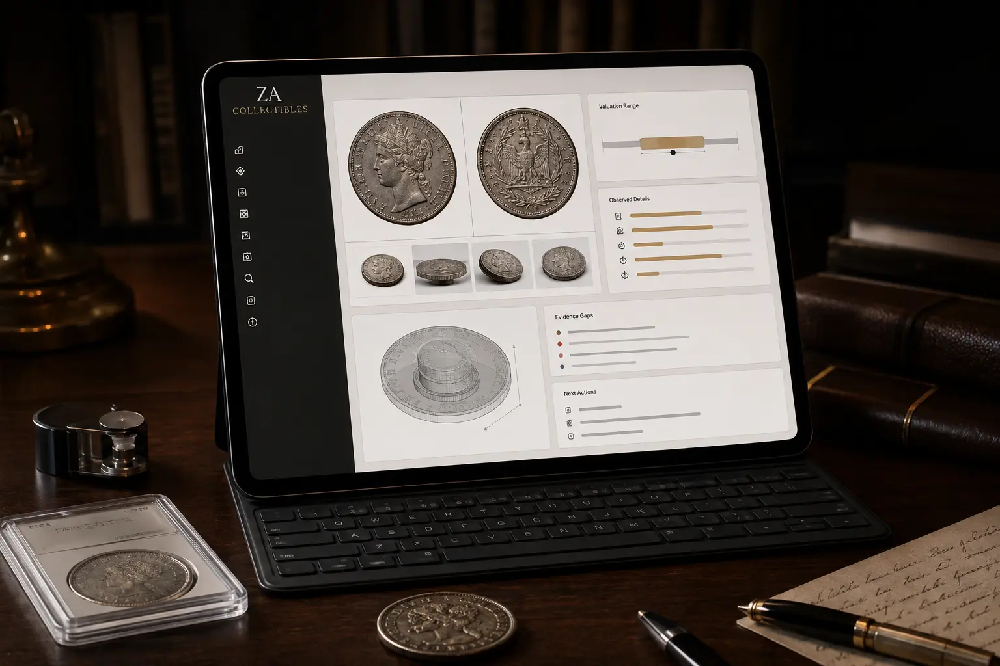

Understand What You Have.
Know What It Means.
Evidence-led appraisal for coins, gemstones, stamps, militaria, watches, paper and historical objects, with value interpreted according to purpose and uncertainty kept visible.


Useful from the First Photograph. Stronger with Every Additional Fact.
Choose Snapshot, Quick Capture or Structured Capture. The system does not punish incomplete information. It records what the evidence can support, what remains provisional and which next detail offers the highest information gain.
Useful Judgement Before Perfect Evidence.
Remote evidence can establish a great deal, but not everything. ZA Collectibles separates what is observed, what is inferred and what remains unresolved, then directs the next most useful action.
Initial Review
Share photographs and basic context. We establish the likely category and immediate evidence gaps.
Structured Capture
Add measurements, certificates, provenance notes and purpose where they materially improve the assessment.
Assessment
Identification, authenticity risk, condition and market evidence are considered separately.
Valuation Context
Collector market, dealer purchase, liquidation, insurance, auction and estate contexts are not interchangeable.
Next Action
Keep, insure, document, sell, consign, source a specialist or obtain stronger physical evidence.
Four Questions, Kept Separate.
Identification
What is the object, issue, type, maker, period or likely attribution?
Authenticity
What supports consistency, what conflicts and where physical inspection is still required?
Condition
Wear, damage, cleaning, alteration, treatment and the reliability of the evidence available.
Value
A range appropriate to the stated purpose and current market evidence, not a context-free number.
Value Changes with the Question.
The same object can reasonably support different figures depending on whether the purpose is collector acquisition, dealer purchase, liquidation, auction, insurance replacement or estate reference.
Collector Market
Likely range in an informed collector-to-market context.
Dealer Purchase
A trade acquisition range accounting for margin, liquidity and risk.
Auction Estimate
An estimate designed for an auction route rather than a universal retail value.
Insurance / Estate
Replacement or reference value matched to the specific formal purpose.
Begin with the Evidence You Already Have.
Use the form below to organise the strongest available evidence into a clear appraisal request. Add photographs, documents and context where available, then keep a copy of the prepared request for your records.
Important Limits of Remote Appraisal
- Loose coin authenticity cannot always be confirmed from ordinary consumer photographs alone.
- Precise grading and rare variety attribution may require improved imaging or physical specialist review.
- A gemstone grading certificate is not itself a valuation and should be considered separately from item-to-certificate consistency.
- Market evidence ages. Any valuation should be read with its purpose and assessment date.